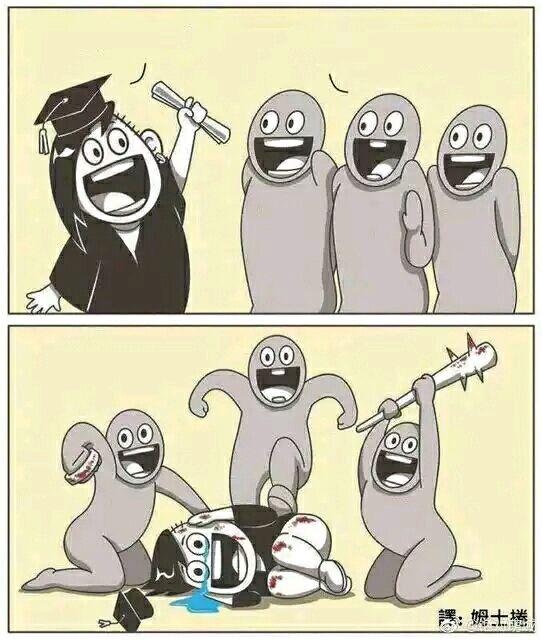
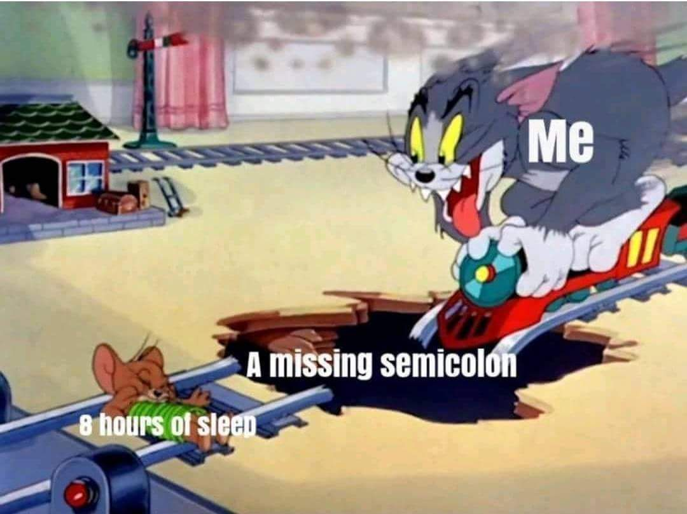

0.引言-有生之年
14年前的某天，我学会了玩flash小游戏。那时的我从未想过，在有生之年里自己竟也能制作游戏。一直以来，我都觉得游戏制作是一项极为繁复、艰难的工作。
直到----我发现了Construct2！
无疑，这是抽象概念的一个实例：借助于封装好的开发工具，我不需要了解js代码的细节，仅凭图形化界面就能制作游戏了。
下面，就让我来介绍第一次制作游戏的详细过程吧！
1.什么是Construct2?
先引用一段Construct2官网的介绍：
Construct 2 is a powerful ground breaking HTML5 game creator designed specifically for 2D games.
It allows anyone to build games — no coding required!
(看到英文也不慌！我有金山词霸！)
简而言之，Construct2是一款封装好的HTML5游戏开发工具。用户只需要通过其图形化界面就能开发游戏，而代码的实现则由软件自动完成。
这就让程序员免于与各种代码纠缠不清，极大提高了效率。

界面与小学-初中电脑课上使用的Scratch类似，都是面向无代码基础者的图形化开发。
软件主要有2个板块：其一用于元素的生成、放置、属性修改等，其二用于编写逻辑、判断、事件。
板块1
板块2
（免费版每次退出时都会弹出两位制作者的生活照，并强调这是由伦敦某小作坊制作，希望各位赞助。某些瞬间都有点心软了，但是200美元...买不起啊！）
2.如何用Construct2开发一个游戏?
关于这一点，Construct2的官网提供了数量繁多而详尽的教程，显然这家公司正在极力吸引开发者。
我按顺序点开了第一篇教程，制作了一个名为PlayerVSMonster的2D射击游戏。教程地址如下：
Beginner's guide
步骤就不再赘述了，直接上图！
激情码农，在线射击
凉了
-
当怪物离开了平面的边界时，移动方向将变为主角；而在平面内，怪物延直线行走。
缺点：太蠢了，毫无可玩性。 -
每1tick怪物调整一次方向，指向主角。
缺点：太强了，毫无可玩性。 -
每1tick怪物调整一次方向，指向主角；但略微提高了主角的移动速度和降低了怪物的生成速度。
结论：还行。
通过写更复杂的逻辑判断，可以进一步提高Monster的AI。
3.感想
Construct2的优点很明显，让人们能专注于创意，而非编码。

但缺陷也很明显，复杂的游戏就不用想了，毕竟这只是个基于HTML5的游戏的制作器。而且，想想当年的VB是怎么凉的?..随便玩玩就好了。
最后，放上游戏成品链接：
HERE